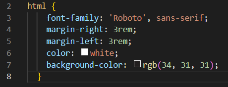

Reference Website
HTML Quick Guide
What is HTML?
HTML stands for HyperText Markup Language. It is a programming language used for building websites. You can structure different sections, paragraphs, links, and more. It can be used for web development, internet navigation and web documentation.
Proper syntax for HTML tags
Every element will have an open tag, content and close tag. For example, here we have an element: <h1>This is a Header</h1>.
Let's break it down:
- <h1> is the open tag.
- "This is a Header" is the element content.
- </h1> is the close tag.
- <h1>This is a Header</h1> is the element itself.
Naming convention for all filenames, paths and folders
Naming conventions have a few rules, but they are mostly straightforward.
- Keep everything lowercase.
- No spaces.
- Only use letters, numbers and dashes (-).
A proper example of naming conventions: macri-amanda-reference-website.html
A bad example of naming conventions: Amanda Macri_Reference Website!
The best practices for commit messages
Commit messages are a way to communicate the changes that have been made in a code document. If there is a bug, spelling error, or more code is added, it will get commited.
Commonly used html tags/elements
- headings, h1-h6: These are heading tags, marked h1-h6. h1 being the most important header and biggest, h6 being the least important heading and smallest
- p: This represents a paragraph of text. It isa block element and always starts on a new line.
- lists: There are two kinds of lists - ordered lists (ol) and unordered lists (ul). Ordered lists would have their list items numbered and unordered lists would have them as bulletin points. To add a list itel, you would use the li tag underneath the first ol or ul tag.
- a:
- img:
- q: This tag is used to mark up quotes in other elements, for example a paragraph.
- blockquote: Use this tag for large, standalone quotes.
- cite: This tag is used to mark the source of the quote.
- em: This tag places emphasis on the element content. It is typically displayed in italics.
- strong: This tag represents urgency and a high level of importance. It is typically displayed in bold.
- b: This tag is used to highlight a keyword. It draws attention to a word without putting too much importance in it. It is typically presented in bold.
- i: This tag is used when using another language, on a technical term or on a title. It is usually represented in italics.
- small: This tag represents side comments and small print. The text in this element will be smaller than the normal size of text.
Block Elements
- body: The body tag encases all the main part of the HTML, in other words: the body. It would contain things like headings, paragraphs, images, hyperlinks, tables, lists, etc.
- header: The header is used to block together the introductory part of the text. It will normally include the introduction, company logo and main navigation parts of a website.
- main: This element wraps the main content of the page.
- section: This element wraps any related comment. It will often have its own associated header.
- article: The article element represents a self-contained part of a website. For example, it would be used for blog posts or a product card.
- div: This is a block element used to group elements together.
- aside: This element is often used on content that is indirectly related to the webpage. It is usually represented in a sidebar.
- footer: The footer is used at the bottom of a webpage. Companies will often use it to list links, copyright information,
extra information about the company, terms and services.
- span: This is an inline container used to mark up text or part of a document.
Explain why accessibility is important and also explain the accessibility properties like:
Web is a crucial part of our day to day life. Web accessibility ensures that everyone, disibility or not, can use and interact with the website.
What is CSS and how can we implement CSS to our html file (write a proper explanation with the code required to attach a CSS file inside html file)
CSS stands for Cascading Style Sheets. It is a coding language used to style HTML documwents. CSS allows you to mnodify many of the visual elements of a webpage, such as: font, colour, image and font sizes, link attributes and much more.
This is how you create and attach your CSS document to your HTML:
- First, you want to create your CSS stylesheet. To do that, go to file in the top left and click new file. Name is "style.css".
- Put the put the "style.css" in a new folder called "css".
- To link the HTML and CSS, you have to paste the text below into the "head" of your HTML. Once done, all changes you add to your CSS will modify your HTML.

The difference between CSS property and value
A property is an aspect of a selector, like margin, background-color, etc. A value is the descriptor of the change, like 1rem, purple, etc.

In this image, we see the selector of HTML. I added all the properties of font-family, margin-right, margin-left, color and background colour. Then there is the value, which is always second. For example, we have 'Roboto', sans-serif;, 3rem and rbg.
Why do we use border-box property in CSS?
We use the border box property in CSS to organize the content, padding, border and margin of an element. It helps us layout elements in CSS and give space where needed. It simplifies adjusting sizes too.
Setting the height and weight to the border edges reflects the actual space being occupied and displayed on the screen.
How we can add spacing to an element
We can add spacing to an element by using margin or padding properties. The margin property will give the element space from other boxes, whereas padding will give the text space from the edge of the box.
The difference between margin and padding
The margin outside the box. It is a transparent layer, pushing other boxes away. It gives the box some breathing room from other boxes. Padding pushes the edge of the box away from the text. It gives the content itself some breathing room.
Types of display properties
There are four different kinds of display properties: none, inline, inline-block, and block.
- none: The element is completely removed.
- inline: Allows the elements to be on the same line - height and width properties have no effect.
- inline-block: Same as inline, but you can modify the height and width properties.
- block: Forces elements on their own line, regardless of width.
What is flexbox?
Flexbox is a two-dimmensional layout method for arranging items in rows or columns. It simplifies the process of changing and positioning each element.
Flexbox Properties
- flex-direction: Change the orientation of the displayed content.
- row: Displays in a row.
- row-reverse: Displays in a row on the other side and reversed.
- column: Displays in a column.
- column-reverse: Same thing as row-reverse, but regarding columns.
- flex-wrap: Decides whether elements will be on one line (flex-wrap: no-wrap;), or wrap onto a new one (flex-wrap: wrap;).
- justify-content: Lets you control the alignment of the element on the main axis and space between flex-items. The default value is flex-start, but it can be substituted for flex-end, center,
space-between, space-around and space-evenly.
- align-items: This works on positions on the cross axis, whereas justify-content does the main axis. Some values that can be used are stretch, flex-start, flex-end and center.
Explain with code the use of flexbox property on a parent element and also explain the sub properties you might need for the flexbox property
Write a code example on how you will use a flexbox property on a parent element with sub properties.
What is CSS grid property?
Write the parent and two sub-properties used for CSS Grid Property.
What is the difference between display: flex and display: grid?
What sub-property we use to divide elements in CSS Grid properties?
What unit we use to fractionally divide the element width in CSS Grid property and what are others unit we can use alternatively? (Write a code example)
What is the area property in CSS grid we use for the child elements?
Which sub-property of display grid you can use to prevent displaying empty columns. Write a code example of that property.
How to Add & Change Fonts Using Google FontsExplain the steps to add google fonts to your CSS file and how will you link it to the html file.
- First, you want to go to the Google Fonts website.
- Next, you're going to find a font you like. For this example, I am going to use "Roboto Regular 400".
- Click on the "Select (your font properties here)" and you'll see it add to the boxes on the right.

- Copy what is in the first box and paste it into the "head" section of your HTML.
- Finally, if you want to use this font, you need to add it in the css. You would have to select the element you want to have the font. Then go to Google Fonts and copy what is in the second box. Paste into your css after the selected element. It might look something like this.